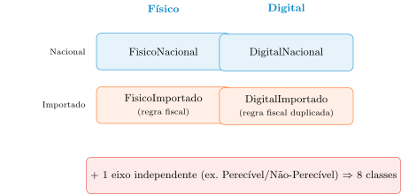
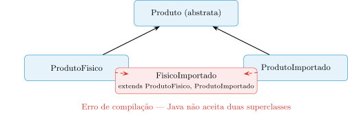
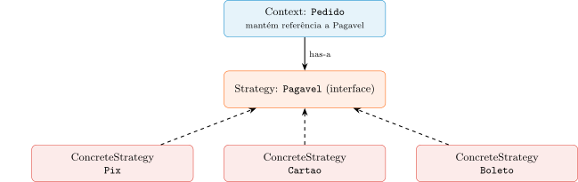

O Colapso da Herança e a Era da Composição: o Padrão Strategy
Aula 10 — Programação Orientada a Objetos
1 Proposta da Aula
Na Aula 8, a Herança nos deu uma ferramenta poderosa para modelar taxonomias rígidas: Pix, Cartao e Boleto herdando de MeioPagamentoBase porque compartilham DNA (autenticação, log de auditoria) e precisam ser tratados polimorficamente. Na Aula 9, formalizamos quando essa substituição é segura (o LSP) e como o erro se encaixa nesse contrato. As duas aulas, sem dizer isso explicitamente, assumiram um mundo com um único eixo de variação por vez: um meio de pagamento é Pix, ou Cartão, ou Boleto — nunca as três coisas simultaneamente, então a árvore de herança nunca precisou lidar com combinações.
Esta aula ataca exatamente o momento em que essa suposição para de valer: quando o mesmo objeto de negócio precisa variar em dois ou mais eixos independentes ao mesmo tempo — um produto que é físico ou digital, e, separadamente, nacional ou importado.
O roteiro, em quatro perguntas:
- Se a herança define o que um objeto é, o que acontece quando um produto precisa ser duas coisas ortogonais ao mesmo tempo?
- Por que o Java proíbe herdar de duas classes simultaneamente — e por que essa proibição não é um capricho de sintaxe, mas o sintoma de um problema mais profundo?
- Se a herança fracassa para eixos independentes, o que a substitui — e por que “usar um” é estruturalmente diferente de “ser um”?
- Como transformar um método
processarPagamento()cheio deif/elsenum design que aceita um novo meio de pagamento sem tocar em uma única linha do código já existente?
Considere o e-commerce que atravessa a disciplina. Ele nasceu simples: uma classe Produto com um preço e um identificador. Conforme o negócio cresce, cada novo requisito parece pedir “mais uma subclasse” — até o dia em que dois requisitos de negócio, verdadeiramente independentes um do outro, chegam ao mesmo tempo. É esse dia que os próximos blocos dissecam.
2 A Fusão Estrutural e o Peso da Herança de Estado
Na fase inicial do aprendizado, extends parece a solução mágica para não repetir código. Essa visão é míope: quando declaramos class B extends A, não estamos só permitindo que B chame métodos de A — estamos fundindo as estruturas das duas classes numa única entidade lógica, compartilhando o mesmo “DNA”. A promessa subjacente é a substituibilidade total: onde o sistema espera um A, ele deve aceitar um B sem perceber diferença.
A ilusão da produtividade. É tentador herdar apenas para “ganhar” métodos prontos:
public class PedidoInternacional extends Pedido {
// "Ganhei" os metodos calcularTotal() e getItens() de graca!
public double calcularTaxaAlfandega() { /* ... */ }
}Essa ilusão esconde um erro semântico grave. Se a relação não for estritamente identitária, o acoplamento estrutural cobra seu preço rapidamente: se, numa refatoração futura, Pedido passar a exigir um endereço de faturamento nacional obrigatório no construtor, PedidoInternacional quebra imediatamente — não porque alguém escreveu código errado, mas porque a herança forçou uma identidade que, na realidade, não existe. Trocamos duplicação de código (um problema de manutenção menor, fácil de refatorar depois) por um acoplamento estrutural tóxico (caro de desfazer, porque agora as duas classes são “a mesma coisa” aos olhos do compilador).
O vínculo de sangue. A herança de classes é o acoplamento mais rígido e inflexível disponível na Orientação a Objetos: a subclasse frequentemente interage com a implementação interna do pai (via protected), violando o encapsulamento de caixa preta; e o comportamento herdado é fixado em tempo de compilação — não é possível trocar de “pai” em tempo de execução. Essa rigidez se manifesta de duas formas bem diferentes, que vale a pena distinguir com precisão:
- Herança de Comportamento (interfaces): fluida e adaptável. O filho promete apenas responder a um contrato (como
pagar()), mantendo soberania total sobre como resolve o problema. O acoplamento é puramente semântico. - Herança de Estado (classes): rígida e invasiva. O filho herda campos físicos de memória (
double saldo,String id). O layout de dados do pai é imposto ao filho, que perde autonomia sobre sua própria composição interna.
O peso na memória: a “Subclasse Gorda”. O custo da herança de estado não é só conceitual — é tangível na infraestrutura. Toda vez que declaramos um campo numa classe base, instruímos a JVM a alocar espaço na Heap para cada instância de cada subclasse, sem exceção:
public abstract class ProdutoBase {
protected double pesoFisico; // essencial para logistica e frete
protected String dimensoesPacote; // essencial para envio fisico
}
public class Ebook extends ProdutoBase {
// Ebook herda pesoFisico e dimensoesPacote na Heap, mesmo sem usar!
}Se instanciarmos milhares de Ebook, teremos milhares de bytes desperdiçados em atributos semanticamente irrelevantes para um produto puramente digital — um cenário clássico de “objeto gordo”. Arquitetura de alto nível também é sobre eficiência de infraestrutura: ao permitir que Ebook herde atributos físicos, violamos coesão e degradamos a eficiência do servidor.
Uma nota de continuidade. A Aula 8 já tratou em profundidade o Problema da Classe Base Frágil (o exemplo do bug de contagem dupla em GerenciadorDeCobrancas) — não vamos reabrir aquela discussão aqui. O ponto novo desta aula é diferente: mesmo quando a base não muda, o simples fato de herdar estado já tem um custo físico mensurável, que cresce silenciosamente com cada subclasse mal ajustada à hierarquia.
3 O Colapso da Hierarquia: Explosão Combinatória
Todo sistema nasce simples. A classe abstrata Produto estabelece um contrato básico e aloca o estado comum:
public abstract class Produto {
protected String id;
protected double precoBase;
public abstract double calcularPrecoFinal();
}Neste momento, a herança parece perfeitamente adequada. Conforme o e-commerce escala, a primeira especialização separa a árvore por meio de entrega:
public class ProdutoFisico extends Produto {
protected double pesoGrama;
@Override
public double calcularPrecoFinal() { return precoBase + calcularFrete(); }
}
public class ProdutoDigital extends Produto {
protected String linkDownload;
@Override
public double calcularPrecoFinal() { return precoBase; }
}Sem perceber, atrelamos irreversivelmente o conceito de “Produto” à sua regra de “Logística” na mesma hierarquia estática. O sistema passa a tratar “ser físico” como uma propriedade primária da identidade do objeto, quando é apenas uma faceta de seu ciclo de vida.
O choque de dimensões. O departamento financeiro exige uma nova tributação: produtos Nacionais têm isenção, Importados recebem taxa alfandegária. Onde encaixamos essa lógica?
- Inserir a regra em
Produtoforça produtos nacionais a herdarem verificações inúteis. - Criar
ProdutoImportadoentra em choque direto com a separaçãoFisico/Digitaljá estabelecida.
A única saída por herança pura é a permutação forçada: uma classe para cada combinação.

Se adicionarmos um terceiro eixo — Perecível vs. Não-Perecível —, o número de classes salta de 4 para 8, e a tendência é exponencial. Uma simples alteração na política fiscal exigirá modificações em múltiplas classes espalhadas pela árvore, violando o princípio de que cada regra deveria ter uma única fonte de verdade.
O limite da linguagem. O desenvolvedor pode tentar contornar a explosão recorrendo à herança múltipla:
// Esta abordagem e sintaticamente invalida em Java
public class FisicoImportado extends ProdutoFisico, ProdutoImportado {
// Erro de Compilacao: Classes nao podem estender multiplas classes
}
O Java proíbe a herança múltipla de classes para evitar o Problema do Diamante — ambiguidades severas na resolução de métodos e conflitos de estado na memória (se ProdutoFisico e ProdutoImportado declarassem, cada um à sua maneira, um campo desconto, qual dos dois prevaleceria em FisicoImportado?). Sem poder herdar as regras de “Físico” e “Importado” de fontes limpas, somos forçados a copiar e colar o comportamento tributário em diversas folhas da árvore.
O diagnóstico. A herança de classes foi projetada para mapear taxonomias biológicas e estritas (todo Cachorro é, essencial e imutavelmente, um Mamífero). Meios de distribuição logística ou enquadramentos fiscais não definem a identidade estrutural imutável do produto — são regras ou features modulares, que variam de forma independente. A herança fracassa catastroficamente quando tentamos usá-la para agrupar comportamentos que variam de forma ortogonal entre si.
3.1 O Colapso da Hierarquia e a Explosão Combinatória
Escreva sua resposta e compare com um colega antes de avançar (2 min).
- □ Em uma hierarquia de herança pura que já modela dois eixos binários independentes com 4 subclasses-folha, a adição de um terceiro eixo binário eleva esse número para 8, mantendo a mesma lógica de crescimento.
- □ Se Java permitisse herança múltipla de classes sem nenhuma outra mudança de linguagem, o problema de duplicação de lógica fiscal entre
FisicoImportadoeDigitalImportadodesapareceria completamente, sem risco de ambiguidade. - □ Um sistema de biblioteca que precisa classificar itens simultaneamente por Formato (Físico/Digital) e por Categoria de Empréstimo (Curto Prazo/Longo Prazo) enfrentaria o mesmo padrão de explosão combinatória se modelado por herança de classes pura.
- □ Herança de classes é uma ferramenta inadequada para qualquer sistema que apresente mais de uma característica variável, mesmo quando essas características não são independentes entre si (por exemplo, quando uma determina totalmente a outra).
4 A Era da Composição: Princípio, Is-a para Has-a e Quase-Decomponibilidade
Quando os autores de Design Patterns: Elements of Reusable Object-Oriented Software (o Gang of Four, GoF) formalizaram os princípios da arquitetura moderna, identificaram que o uso indiscriminado de extends era o principal vetor de degradação em sistemas de grande porte. A regra máxima do design orientado a objetos, segundo eles, é: “favoreça a composição de objetos sobre a herança de classes”.
Essa preferência não é estilística — é uma estratégia para mitigar riscos estruturais:
- Encapsulamento preservado: a herança frequentemente exige que a base exponha detalhes internos (
protected) para os descendentes funcionarem. A composição interage através de interfaces públicas, mantendo cada classe como caixa preta. - Flexibilidade dinâmica: a herança fixa relações antes mesmo do programa iniciar. A composição permite montar e alterar comportamentos complexos conectando objetos menores em tempo de execução — podemos trocar a estratégia de tributação ou o mecanismo de logística de um produto sem instanciar uma nova subclasse.
- Desacoplamento de eixos de mudança: compondo um objeto com instâncias de interfaces como
TributacaoeLogistica, os eixos de mudança se tornam independentes. Uma alteração na regra fiscal de importados não afeta a lógica de frete.
De is-a para has-a. A herança define uma relação estrita de identidade, onde o subtipo assume toda a carga física e histórica do pai. A composição vê o objeto como um orquestrador que delega trabalho pesado a especialistas menores. A escolha arquitetural correta: use herança apenas quando o objeto é uma especialização essencial do pai; use composição quando ele apenas precisa consumir os serviços de outro.
A arquitetura da complexidade. Herbert Simon observou que sistemas complexos e estáveis quase sempre assumem a forma de hierarquias construídas a partir de subsistemas simples — a quase-decomponibilidade: os elos internos de uma peça são muito mais fortes do que as dependências entre peças distintas. Sistemas que funcionam evoluíram a partir de sistemas simples que já funcionavam, combinando poucas peças padronizadas.
A diferença entre design integrado (herança) e modular (composição) é ilustrada pela analogia dos eletrodomésticos: se um televisor tem um VCR embutido na mesma carcaça, a quebra de uma engrenagem do vídeo cassete obriga levar a TV inteira para o conserto. Num aparelho de som modular, se o CD Player queima, você o desconecta e troca, enquanto as caixas de som e o amplificador seguem operacionais. No e-commerce: se a API dos Correios mudar, trocamos apenas a classe que encapsula a logística, sem tocar em Pedido.
5 Tipos de Composição e Fronteiras de Domínio
Composição não é um conceito monolítico — se manifesta em diferentes graus de proximidade e tempo de vida entre objetos.
Agregação (has-a / Todo-Parte). O “Todo” agrupa elementos, mas não é dono absoluto de suas vidas. Exemplo: um CarrinhoDeCompras que contém Produtos — se o carrinho for deletado, os produtos continuam ativos no estoque. Compartilham um contexto temporário, mas têm ciclos de vida independentes.
Associação (uses-a / colaboração livre). As entidades são completamente autônomas. Um Cliente associado a um CartaoDeCredito: o cliente usa o cartão para transacionar, mas o cartão pode existir sem aquele cliente específico (ou pertencer a outra conta), e o cliente não depende daquele cartão.
Diferente da Composição estrita (onde a “parte” é criada e destruída exclusivamente pelo “todo”), Agregação e Associação oferecem a flexibilidade necessária para montar e desmontar subsistemas em tempo de execução.
Independência e testabilidade. A composição permite desmembrar uma lógica de mil linhas em dezenas de classes isoladas e coesas. Podemos testar a regra tributária de importação exaustivamente, sem instanciar o grafo complexo de um ProdutoFisico. Equipes diferentes podem trabalhar no cálculo de frete e no cálculo de impostos simultaneamente, sem conflitos de controle de versão.
Evitando a mistura de domínios. É tentador colocar lógicas de comunicação, infraestrutura e negócio na mesma entidade — mas isso cria dependências artificiais severas. O princípio do Especialista da Informação (já visto na Aula 5, sob a ótica do GRASP) resolve isso de novo aqui: a responsabilidade de uma tarefa deve recair exclusivamente sobre a classe que possui os dados necessários para resolvê-la. Produto é o especialista em nome e preço base; ele não deve se conectar a um servidor SMTP para despachar e-mails, nem formatar relatórios em PDF. Isolar essas preocupações mantém Produto testável e imune a mudanças em requisitos de rede ou interface — se o sistema mudar o formato de exportação de relatórios, a alteração fica contida num serviço especializado, sem tocar o núcleo do domínio.
5.1 Composição, Agregação e Associação
Escreva sua resposta e compare com um colega antes de avançar (2 min).
- □ Se todos os Produtos de um Carrinho fossem deletados do sistema no exato instante em que o Carrinho é deletado, essa relação deixaria de ser uma Agregação clássica e passaria a se comportar como Composição estrita.
- □ Se o Cliente fosse implementado de forma que a existência do CartaoDeCredito dependesse inteiramente do Cliente (o cartão nunca poderia existir sem aquele cliente específico), essa relação ainda seria corretamente descrita como Associação livre.
- □ Uma classe Playlist que agrupa referências a Musica, mas cujas músicas continuam existindo na biblioteca mesmo depois que a Playlist é apagada, exemplifica o mesmo padrão de Agregação visto no Carrinho de Compras.
- □ Aplicar o princípio do Especialista da Informação significa que toda funcionalidade relacionada, de qualquer forma, a um objeto deve ser implementada dentro dele, mesmo que envolva conectar-se a servidores externos.
6 O Desafio do Checkout: do Labirinto de Condicionais à Herança Fracassada
O e-commerce cresceu, e o checkout agora precisa processar pagamentos por múltiplos meios: Cartão de Crédito, Pix e Boleto. Cada meio tem sua própria regra de cálculo (taxas vs. descontos), sua própria comunicação externa (APIs de bancos) e tempos de processamento distintos. Como acoplar essa variação ao objeto Pedido sem explodir a complexidade do sistema?
A abordagem ingênua: o labirinto do if/else.
public void processarPagamento(String tipo) {
if (tipo.equals("PIX")) {
// logica para gerar QR Code e aplicar 5% de desconto
} else if (tipo.equals("CARTAO")) {
// logica de comunicacao com antifraude e gateways
} else if (tipo.equals("BOLETO")) {
// logica para codigo de barras e vencimento
}
}O método cresce indefinidamente a cada novo meio integrado; Pedido passa a conhecer detalhes de infraestrutura alheios ao domínio (chaves de API, protocolos de antifraude); e qualquer manutenção na regra do Pix arrisca quebrar a rotina do Cartão — um code smell clássico de baixa coesão.
A tentativa por herança: o colapso da identidade.
// Tentando resolver variacoes criando subtipos
public class PedidoPix extends Pedido { /* ... */ }
public class PedidoCartao extends Pedido { /* ... */ }Essa tentativa comete um erro semântico fundamental: confunde identidade com papel. O meio de pagamento não define o que o Pedido é — é apenas um evento que ocorre em seu ciclo de vida. A herança introduz dois problemas intransponíveis:
- Aprisionamento estático: em Java, a identidade de um objeto é fixada na instanciação (
new). Se um cliente cria umPedidoPixe, no último momento da compra, decide trocar por Cartão, a arquitetura falha — seria necessário instanciar um novo objeto, copiar todo o estado anterior e descartar o antigo. - Explosão da árvore: como já vimos, a especialização hierárquica não evolui em eixos ortogonais (Logística × Tributação × Meio de Pagamento). Adicionar um novo eixo de variação ao lado de “meio de pagamento” reabriria o mesmo colapso combinatório do bloco anterior.
O que fazer, então? Desmembrar o comportamento do objeto principal e encapsulá-lo em estratégias modulares. Em vez de perguntar “o que este pedido é?”, perguntamos “qual estratégia de pagamento este pedido usa?” — é exatamente essa mudança de pergunta que o próximo bloco resolve.
7 O Padrão Strategy: Composição, Delegação e o Princípio Aberto/Fechado
Desmembramos o comportamento financeiro do Pedido, transformando o processamento de pagamentos num componente modular. O Pedido deixa de ser “processador” para atuar como orquestrador, delegando o trabalho especializado.
Definindo a fronteira do contrato.
// O contrato que define o que uma estrategia de pagamento deve fazer
public interface Pagavel {
boolean processarPagamento(double valorBase);
}
// Implementacoes concretas, especialistas independentes
public class PagamentoPix implements Pagavel { /* ... */ }
public class PagamentoCartao implements Pagavel { /* ... */ }O Pedido conversa única e exclusivamente com a abstração Pagavel — não importa o que acontece dentro de processarPagamento(), ele confia apenas no contrato. Note que reaproveitamos deliberadamente Pagavel, Pix, Cartao e Boleto, os mesmos nomes das Aulas 8–9 — lá, essas classes eram subclasses de MeioPagamentoBase; aqui, elas são implementações independentes da mesma interface, injetadas por composição. É o mesmo domínio, resolvido de duas formas estruturalmente diferentes.
Injeção de dependência e flexibilidade dinâmica.
public class Pedido {
private Pagavel estrategiaPagamento;
private double total;
// A estrategia e injetada em tempo de execucao
public void setEstrategiaPagamento(Pagavel pagamento) {
this.estrategiaPagamento = pagamento;
}
}Graças ao método set, o usuário pode transitar do Pix para o Cartão na tela de checkout, e o objeto Pedido simplesmente troca a peça acoplada — sem ser destruído. É a solução exata para o aprisionamento estático do bloco anterior.
Execução via delegação.
public void finalizarPedido() {
if (this.estrategiaPagamento == null) {
throw new IllegalStateException("Estrategia de pagamento ausente.");
}
// Delegacao: o Pedido pede ao especialista que execute a tarefa pesada
boolean sucesso = this.estrategiaPagamento.processarPagamento(this.total);
}Associação (conhecer o objeto via referência) + Delegação (usar o objeto) formam a base do design moderno. Não existem mais if/switch: o roteamento é feito pela própria JVM em tempo de execução.
A topologia formal do GoF. O padrão Strategy define uma família de algoritmos, encapsula cada um deles e os torna intercambiáveis, permitindo que o algoritmo varie independentemente dos clientes que o utilizam.

- Context (
Pedido): a entidade que precisa do algoritmo. Mantém uma referência isolada para a interface (has-a). - Strategy (
Pagavel): a interface que estabelece o contrato comum a todos os algoritmos suportados. - ConcreteStrategy (
Pix,Cartao,Boleto): as implementações específicas, encapsulando a complexidade real da regra de negócio.
Late Binding, revisitado. A resolução de qual código roda — Pix ou Cartao — não existe em tempo de compilação. Em tempo de execução, a JVM consulta a Virtual Method Table (VTable) do objeto alocado na Heap para decidir qual implementação acionar — o mesmo mecanismo visto nas Aulas 7 e 9, agora escolhendo entre estratégias de pagamento em vez de entre subtipos de uma hierarquia.
O Princípio Aberto/Fechado (OCP) em ação.
// Novo requisito: pagamento em criptomoedas
public class PagamentoCriptomoeda implements Pagavel {
public boolean processarPagamento(double valor) {
// logica de interacao com a blockchain
return true;
}
}Podemos adicionar Criptomoedas, wallets ou qualquer novo meio amanhã, apenas criando uma nova classe. A classe Pedido não precisa ser alterada, não sofre recompilação e não corre risco de quebrar o que já funciona. Este é o triunfo do design: transformar um sistema que seria um monólito crescente de if numa arquitetura modular, onde a expansão de requisitos é acomodada pela adição de novas peças, nunca pela destruição do que já foi construído.
7.1 O Padrão Strategy e o Princípio Aberto/Fechado
Pedido.java?
Escreva sua resposta e compare com um colega antes de avançar (2 min).
- □ Se o Contexto (
Pedido) precisasse verificar, com umif, se a estratégia injetada é uma instância dePixantes de chamarprocessarPagamento(), isso indicaria que o padrão Strategy não foi implementado corretamente. - □ Se a interface
Pagavelnão existisse e oPedidodependesse diretamente da classe concretaPix, ainda seria possível trocar a estratégia de pagamento em tempo de execução sem modificar o código dePedido. - □ Um sistema de notificações que aceita diferentes canais (
EmailNotificador,SmsNotificador,PushNotificador) implementando uma interface comumNotificador, injetada no objeto que dispara os alertas, segue a mesma topologia Context/Strategy/ConcreteStrategy vista no pagamento. - □ O Princípio Aberto/Fechado exige que uma classe nunca seja modificada depois de escrita, mesmo para corrigir um bug real dentro de sua própria lógica interna.
8 Conclusão
Voltando às quatro perguntas da abertura:
- Quando um objeto precisa “ser” duas coisas ortogonais: a herança fracassa, porque força uma prioridade hierárquica entre eixos de variação que, no negócio real, são independentes — o resultado é a explosão combinatória.
- Por que Java proíbe herdar de duas classes: para evitar o Problema do Diamante — ambiguidades de método e de estado que surgiriam se duas superclasses trouxessem definições conflitantes. A proibição não é capricho; é a linguagem recusando resolver uma ambiguidade que ela não pode resolver com segurança.
- O que substitui a herança para eixos independentes: a composição — “usar um” (delegar a um especialista via interface, substituível em tempo de execução) em vez de “ser um” (fundir estruturas permanentemente em tempo de compilação).
- Como eliminar o labirinto de
if/else: o padrão Strategy — uma interface (Pagavel), implementações intercambiáveis injetadas por composição, e delegação pura, entregando o Princípio Aberto/Fechado na prática.
Vocês deixaram de enxergar o software como uma taxonomia biológica (herança) e passaram a compreendê-lo como um sistema de engrenagens intercambiáveis (composição e contratos). Com as regras de negócio delegadas ao padrão correto, Pedido voltou a ser leve, focado e coeso.
Ponte para a Aula 11
O padrão Strategy que construímos hoje é um representante concreto de uma família maior: os Padrões de Projeto (Design Patterns), catalogados pelo Gang of Four em 1994. A Aula 11 dá um passo atrás para ver o quadro completo: de onde vem esse vocabulário (a inspiração na arquitetura civil de Christopher Alexander), o que um padrão de projeto não é (não é framework, não é algoritmo estrutural, não cura código procedural), e como os 23 padrões originais se organizam em três famílias — Criação, Estrutural e Comportamento — cada uma respondendo a um tipo diferente de problema arquitetural. O Strategy que vocês acabaram de dominar é o primeiro exemplo real de um padrão comportamental; a Aula 11 mostra onde ele se encaixa entre os outros 22.